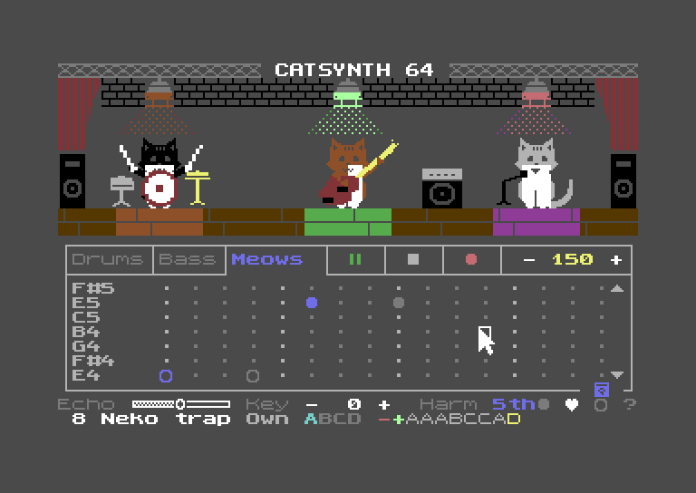
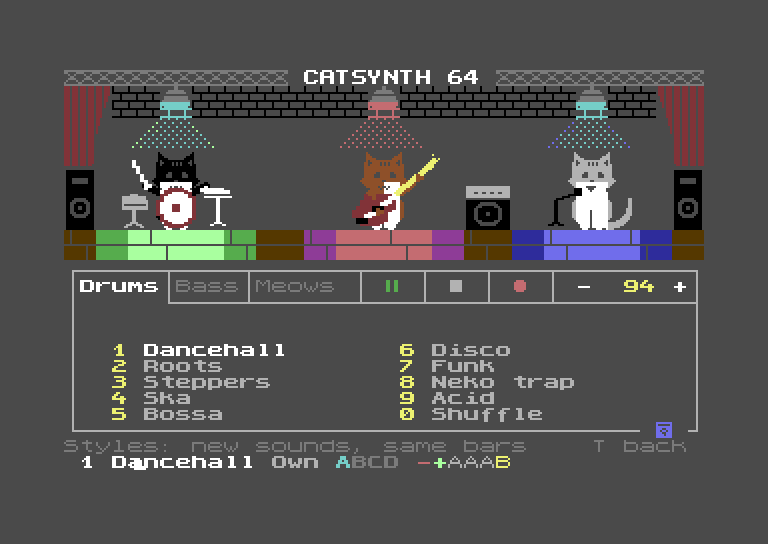
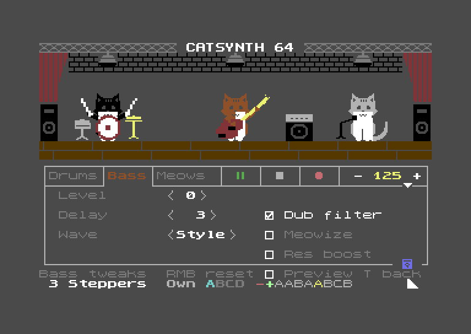

Introduction
Congratulations! You now own CatSynth 64, a toy synthesizer for your Commodore 64 with a band of three cats.
The drum cat keeps the beat. The bass cat plays the bass line. The singer cat sings, and since she is a cat, she sings in meows. Every meow lands on a note of the song's scale, so the singer is never out of tune, and every meow can come back as a dub echo.
You do not need to know anything about music to play CatSynth 64. You choose a style, the band starts playing, and you change it a step at a time until it is yours. If you do know about music, you will find scales, modes, transposes, swing and a looper waiting for you.
You can play with the keyboard, a joystick or a mouse, or all three at once. This guide shows you how. Read Chapter 3 first if you are in a hurry: it makes your first song in ten minutes.
Setting up
What you need
- A Commodore 64 (PAL), a C64 Ultimate or an Ultimate 64
- A disk drive as device 8 with the CatSynth 64 disk
- A TV or monitor with sound turned up
- A mouse in port 1 (you can play without one): a 1351, or on the C64 Ultimate a USB mouse, which the Ultimate turns into a 1351
- A joystick in port 2 (you can play without one, too)
- A blank disk if you want to save songs
- A second SID chip, if you have one (see below): the band sounds bigger with it, and everything also works without
Loading the program
Switch on the computer and the drive, put the disk in the drive and type:
and press RETURN (LOAD"CATSYNTH64",8,1 is the same). The screen shows:
and it starts by itself: no need to type RUN (LOAD"CATSYNTH64",8 and RUN work too). CATSYNTH64 loads CatBoot, a small fast loader: with a 1541, JiffyDOS or not, the program, CATSYNTH64 MAIN, comes in at about four times the usual speed (some 15 seconds instead of a minute), and CatBoot stays in the drive afterwards, so the disk page can load songs and read the directory while the band plays on. Other drives, an SD2IEC and more than one drive on the cable load it the usual way (and then the music pauses while the drive works). Then the border flashes for a moment while the program unpacks itself, the title screen appears and the band starts to play.
The title screen
The band plays on stage under the CatSynth 64 sign while a message scrolls along the bottom of the screen. Every so often the bottom half shows a card with the most important keys. If you leave the title screen alone, the band plays all ten styles in turn, each one through its song, so you can listen to them all. Press a number key to hear that style now.
Press FIRE, SPACE or RETURN to go on stage. On stage the band plays on with the style you were listening to, in its own song slot (Chapter 4 tells you about the ten song slots); at first that is slot 1, the dancehall song. For three seconds the settings line reminds you: "RUN/STOP: help <-: live play".
The mouse
The mouse pointer sleeps until you need it. Click a button or give the mouse a quick push and the pointer appears on the panel. The first click only wakes the pointer; from then on every click counts. The pointer stays on the panel and never goes over the stage.
While you hold a mouse button down, the keyboard is not read. Let go of the button before you press a key.
The joystick
The joystick in port 2 works exactly like the mouse: it moves the same pointer. Push it and the pointer moves, slowly at first and faster the longer you hold it. Over the matrix it jumps a whole cell for each push (and on, a cell at a time, while you hold it), so you can't miss one. FIRE is the left mouse button: the click happens when you let go. Hold FIRE for half a second and it is the right button. Everything this guide says about clicks works with the joystick, too. While you hold the joystick, the keyboard is not read.
A second SID
The SID is the C64's sound chip, and it has three voices: CatSynth 64 gives one to each cat. A second SID adds three more voices, and the band uses all of them:
- THE DUB ECHOES get a voice of their own. With one SID an echo can only sound on the singer's voice, between her meows; with two the echoes ring on while she sings the next meow.
- THE HARMONY SINGER: a second singer a third or a fifth above the first (press H, Chapter 5).
- THE BASS DELAY: the bass comes back a few steps later, and with the Dub filter its repeats sweep through the second chip's filter (the Bass page, Chapter 6).
There is nothing to switch on in CatSynth 64: it looks for a second SID at address $D420 (and at $D440, $D460 ... up to $D4E0) as it starts. On a C64 Ultimate or an Ultimate 64, set the second SID (the second UltiSID, or a real chip in the second socket) to $D420 in the Ultimate's menu, then load CatSynth 64. On a real C64 you need a dual-SID board set to one of those addresses.
How to tell that it was found: the singer's settings line shows the harmony as "Off" (without a second SID it shows "--"), and the Bass page has no "Delay: on SID 2" reminder. Without a second SID everything else works just the same.
Meet the band
The screen has two halves. At the top is the stage with the band; at the bottom is the panel where you change what they play.
The stage
| RINGO PURR | the drum cat (left, black) sits behind a kick drum, a snare and a hi-hat. Watch the sticks: Ringo plays the drum you hear. |
| PAW MCCATNEY | the bass cat (middle, orange) plays a red bass guitar and plucks it on every note. |
| MICK JAGUAR | the singer cat (right, grey) stands at the microphone. Mick's mouth opens for every meow, and an ear flicks at every echo. |
Their names are written under them on the title screen. Any likeness to a famous drummer, bass player or singer is purely feline.
Each cat has a stage light. It flashes when the cat plays and fades away again, and on every new bar the lights change colour.
The panel

The panel shows one cat at a time. Across its top are three tabs:
The open tab is written in bold, in its cat's colour. Click a tab to open it, or press the Commodore key (C=) to open the next one. Click the tab that is already open (or press T) and the cat's SETTINGS PAGE opens over the matrix; Chapter 6 tells you all about it.
MUTE. Right-click a tab and that cat stops playing: its name turns light red and the cat stands still on the stage. Right-click it again to bring it back. On the keyboard, CTRL+1, CTRL+2 and CTRL+3 do the same for the drums, the bass and the meows. A muted cat still plays the steps you set while you edit, so you can hear what you change.
Next to the tabs are the transport buttons and the tempo:
> PLAY / PAUSE. While the band plays it shows a pause sign.
Pause stops the band where it is; play goes on from there.
# STOP. The band stops and goes back to the top of the song.
o RECORD. Live play with recording switched on (Chapter 7).
Click it again to switch both off.
- 94 + the tempo in beats per minute. Click - or + to change it.
Under the tabs is the open cat's bar, the MATRIX. It has 16 steps from left to right, one for every sixteenth note of the bar, and 7 rows. A dot is an empty step; the dots on the four beats are a little brighter. What the rows mean depends on the cat:
| DRUMS | Each row holds two drum sounds, a left one and a right one, named at the start of the row. A left sound shows as a block, a right sound as a ball, each in its own colour. |
| BASS | Each row is a note of the song's scale, lowest at the bottom, named at the start of the row (E3, F#2...). The root note is orange. |
| MEOWS | Each row is a step of the singer's scale, with the note it sings at the start of the row. |
When the bar you are looking at plays, a white arrow on the line above the matrix shows the step the band is on: the PLAYHEAD.
The frame closes under the matrix. At its right end sits a small floppy disk: click it to open the disk page (Chapter 8). Below the frame, the next-to-last line holds the open cat's settings. The bottom line shows the song slot and its name, the mode, the four bars and the song's chain. Appendix C tells you about every one of them.
Your first song
In this chapter you make the dancehall style your own. The band is already playing. If it is not, press SPACE or click the play button.
Every lesson works with the keyboard, the mouse or the joystick. Use whichever you like; you can mix them as you go. Remember that FIRE is a left click and FIRE held is a right click.
In the browser version the number keys hold the ten techno songs, not the styles' songs these lessons use. To follow along, press S, click New, then Defaults (or SHIFT+D), and Yes: the ten styles' songs come back. The browser has no disk drive, so the disk page says so; New still works.
Lesson 1: choose a style
CatSynth 64 keeps ten songs at once, one on each number key, and at first each one is the song of a style: 1 is dancehall, 2 roots, and so on up to 0, the blues shuffle (Appendix B lists them all). Press 2. The band finishes the bar it is playing ("Next bar: slot 2"), then plays a slow reggae "one drop": listen how the drum cat leaves the first beat empty. Press 1 to go back to dancehall.
With the mouse, click the name at the bottom left of the screen: the left button takes you to the next song. The right button opens the style list (Chapter 4).
press each number key from 1 to 0 in turn and listen. The bottom line shows the number and name of each song.
Lesson 2: move around
Click the Drums tab, or press C= until it opens. A blinking cursor sits in the matrix: a box on an empty step, a flashing mark on a full one.
Move it with the CRSR keys (hold SHIFT to go left or up), or just by moving the pointer over the matrix with the mouse or the joystick: the cursor follows the pointer.
Lesson 3: add a drum
Look at the top row of the drum matrix. It says BD BM: the kick drum (BD) on the left button, the boom (BM) on the right. The settings line under the matrix spells it out for the row the cursor is on (LMB and RMB are the left and right mouse buttons):
Move the cursor onto an empty step of the top row and press RETURN or click the left mouse button (or tap FIRE). A kick drum appears as a block and you hear it at once. Do it again and it goes away.
Now press SHIFT and RETURN together, or click the right button, on the same step. The kick becomes a boom, drawn as a ball.
The drum cat has only two paws free for sticks, so he plays one sound on a step. Put a sound on a step that already has one and the new sound takes its place.
Press Q on a drum step and the next sound of the kit takes its place: step through all fourteen of them with Q, and back with A.
put a snare (SN, the second row) on the last step of the bar and listen to the drum cat play it.
Lesson 4: change the bass

Open the Bass tab. Each row is a note, so you change the bass line by putting notes on the rows you want. You can only choose notes that fit the song, so the bass cat cannot play a wrong note.
| RETURN or a left click | a note on the cursor's row; on a note: take it away |
| SHIFT+RETURN or a right click | a note that slides up into its pitch, as dub basses do (a yellow arrow); on a note: make it longer |
A long note shows as a block followed by a bar for as long as it holds, from 1 to 4 steps. K changes the length too, and G makes a note slide or stop sliding. A slide that comes while the note before it still sounds glides on from that note, without a new attack, like a 303. Q and A move the note under the cursor up and down the scale.
The matrix shows seven notes at a time. To reach higher or lower notes, move the cursor past the top or the bottom row with CRSR, or click the arrows at the right edge of the matrix: the rows scroll.
On the settings line, "Len" shows how long new notes are. Click it to change it, or play a note of the length you want first: new notes take the length of the last one you touched.
Lesson 5: make the singer sing

Open the Meows tab and put a meow on an empty step with RETURN or a left click. The singer meows. A meow on a higher row sings higher. Q and A move a meow up and down the scale, too.
There are four kinds of meow, each with its own mark:
| MEW | short and cheerful (a ball) | |
| MEOW | the classic, up and down (a heart) | |
| OOH | long and plaintive, with vibrato (a ring) | |
| MRR? | rising, like a question |
A right click or SHIFT+RETURN on a meow changes it to the next kind; so does K. The four marks at the right end of the settings line show which kind new meows get: that one is white. Click another to choose it.
Lesson 6: the dub echo
A meow can come back as an echo, once or twice, a little darker and quieter each time. Grey marks in the singer's matrix show where the echoes land.
Press E to change how far apart the echoes are, from 2 to 8 steps, or switch them off. With the mouse, click along the "Echo" slider at the left of the singer's settings line: off, 2, 3, 4, 6 and 8 steps.
With a second SID chip (Chapter 1) the echoes get a voice of their own and keep ringing while the singer goes on with the next meow: every meow echoes. With one SID the singer has to sing her echoes herself, between her meows, so an echo only comes when there is room for it: when the echo is farther away than the meow is long (a long OOH needs a long echo, a short MEW a short one), and when it ends before her next meow. The grey marks show only the echoes she will sing.
set the echo to 6 and put two meows a bar apart. Now you have a real dub song! Then try a MEW with the echo on 3.
Lesson 7: faster, slower, stop
Press + to play faster and - to play slower, or click the - and + next to the tempo. The tempo shows in beats per minute.
SPACE stops the band and starts it again from the top. The play button is a pause button: it stops the band where it is and goes on from there (SHIFT+SPACE does the same). The stop button always goes back to the top.
open the Drums tab and click along the "Swing" slider, or press W (SHIFT+W goes back). The off-beat steps come later and later, and the beat starts to roll. The swing stops where the short steps would get too short to play a note.
Lesson 8: keep it
Your song lives in the computer's memory until you switch it off. To keep it, put it on the disk: press S for the disk page, type a name, and press SHIFT+RETURN (or click Save). "Saved" says it is on the disk. Next time, press S, click your song in the list and press RETURN (or click Load). Chapter 8 tells you more.
The browser version has no disk drive: there your song lasts as long as the page is open.
Lesson 9: play it live
Press the left arrow key (top left of the keyboard): the letter keys become pads. Q to P play the drum cat's sounds, A to L the bass cat's notes, Z to / the singer's meows, low to high. Play along with the band.
Now press RETURN: the record button blinks and whatever you play goes into the bar on the nearest step, so it loops round with the band. Add a clap on one pass, a meow on the next. RETURN again stops recording, and DEL takes back everything you recorded since you started. Press the left arrow key again to go back to editing.
in the funk song (press 7) record Z X C on the singer row on beats 2 and 4, then a few drum hits over it.
That's it, your first song! In the next chapters you will make it longer, change its key and give each cat a voice of its own; Chapter 7 tells you all about live play and the looper.
Bars and songs
A song is more than one bar. CatSynth 64 keeps four bars for every song, called A, B, C and D, and plays them in an order called the chain.
The bottom line shows the four bars, ABCD, with the one you are editing in cyan. Next to them are a red - and a green +, and then the chain, for example AAAB: the band plays bar A three times, then bar B, then starts again. The bar that is playing now is shown in yellow. A chain can be up to 16 bars long.
| F1 | edit bar A F3 edit bar B |
| F5 | edit bar C F7 edit bar D |
| C | choose the next chain: AAAB, AABB, ABAC, ABCD, A, AB, AAABAAAC |
| X | copy bar A into the bar you are editing |
| DEL | clear the open cat's steps in the bar you are editing |
With the mouse, click a letter A B C D to edit that bar. To write your own chain:
| click a bar of the chain | it becomes the next bar: A, B, C, D |
| right-click it | the one before: D, C, B, A |
| + (green) | one bar more at the end (the last one again) |
| - (red) | one bar less (one is the least) |
make a twelve-bar song. Click + until the chain is twelve bars long, then click the bars until it reads AAAABBAACDAA. Put a fill in bar C and a stop in bar D.
The playhead above the matrix only shows while the bar you are editing plays. Edit bar B in an AAAB song and it comes round once every four bars.
Every style comes with its own bars: a fill, a dub drop where the bass goes away, a turnaround. The blues shuffle even plays a full twelve-bar blues.
press F3 to edit bar B, open the Bass tab and press DEL. Now the bass cat takes a rest every fourth bar.
Ten song slots
CatSynth 64 keeps ten whole songs in memory, one in each SONG SLOT, on the keys 1 to 9 and 0. When you switch it on, the slots hold the songs of the ten styles: slot 1 the dancehall song, slot 2 the roots song, and so on to slot 0, the shuffle.
Press a number key to open that slot. While the band plays, it finishes the bar first, so the groove never stumbles: the settings line says "Next bar: slot 3", and on the bar line the new song starts from its top, at the first bar of its chain. Pressed while the band is stopped, the slot opens at once. Changed your mind? Press the key of the slot that is open, and the switch is called off.
Every slot keeps its own song: the bars, the chain, the tempo, the mode, the transposes and the settings pages. Edit slot 1, go to slot 3, come back, and your edits are all still there. The slots last until you switch the computer off, so save the songs you want to keep on a disk (Chapter 8).
The bottom line starts with the open slot's key and its name: the style's name, or the name of the file once the slot was loaded from the disk or saved to it (its first nine letters). Click the name to go to the next slot (at the end of the bar while the band plays; click again to go on to the one after).
in slot 1 put a few snares on the drums. Press 3: the steppers come in at the next bar. Press 1 again, and the dancehall song is back with your snares.
New sounds for a song

Hold SHIFT and press a number key, and the open song gets the sounds of that style: its drum kit, its bass sound, its key (the root note) and its scale, and the style's harmony. Your bars, the chain, the tempo and the settings pages stay as they are. The meows fit themselves to the new scale, and the bass line moves to the new key, each of its notes that is off the new scale moved to the nearest one in it, so the song keeps its shape in a new dress. While the band plays, this too waits for the end of the bar ("New sounds at the next bar"); press the open slot's number to call it off ("Switch called off").
THE STYLE LIST. Right-click the name at the bottom left, and the style list covers the matrix: the ten styles in two columns, from "1 Dancehall" to "0 Shuffle", the open song's style in white. Click a style, or press its number key, and the open song gets its sounds, as with SHIFT. T, or another right click on the name, closes the list and changes nothing.
press 9 for the acid song, then SHIFT+5. The acid riff now plays in the bossa's F lydian, on the bossa's kit and bass. SHIFT+9 brings the squelch back.
Keys, modes and scales
Each style has a scale, the set of notes that sound right in it. The bass and the singer only ever play notes of that scale.
Change the mode
Press M, or click the mode on the bottom line, to play the whole song in another mode. The mode shows in yellow when it is not the style's own:
| Own | the style's own scale | Maj | major (bright) |
| Min | minor (sad) | Dor | dorian (cool) |
| Phr | phrygian (dark, Spanish) | Mix | mixolydian (rocky) |
| Lyd | lydian (dreamy) | Blu | blues |
Your notes are not changed. The band plays each note as the same step of the new scale, so a melody keeps its shape. The names at the start of the bass and singer rows change to the new notes. Press M until Own comes back and the song is exactly as before.
Transpose
| , and . | move the singer down or up the scale |
| < and > | move the bass down or up the scale (SHIFT with , and .) |
Both go up to seven steps of the scale either way, and both stay in key. Each cat shows its own on its settings line as "Key - n +"; click the - or the + there to change it.
Harmony (with a second SID)
Press H, or click "Harm" on the singer's settings line, and a second singer joins in, a third or a fifth above the first. Do it again to change it, and once more to switch it off. Harmony needs a second SID chip; without one the setting shows "--". The harmony counts in the song's scale, so its third is the scale's third above each meow; in the pentatonic styles (five notes) the fifth is three notes up, which lands on a fifth more often than not.
The harmony is not kept with a song: opening a slot, loading a song or giving a song new sounds (SHIFT and a number key) brings back the style's own harmony.
The settings pages
Every cat has a voice of its own, and so can yours. Each tab has a SETTINGS PAGE that changes how its cat sounds.
TO OPEN IT: click the tab that is already open, or press T. The page covers the matrix; the band plays on. The settings line names the page (Drum tweaks, Bass tweaks or Meow tweaks) and reminds you how it works.
TO CLOSE IT: click the open tab again, press T, click "T back" at the right of the settings line, or click another tab. C= on a page takes you straight to the next cat's page.
Every setting on a page reads
| click < or > | one step down or up |
| right-click it | back to the value the band made it with |
| click the label | select it (the white one), for the keys |
A setting with a box, [ ] Label, is on or off: click the box or its name to tick it, [x], or untick it.
| CRSR down / up | select the next / the one before |
| CRSR right / left | one step up / down (so do Q and A) |
| RETURN | play the cat |
| SHIFT+RETURN | back to the value the band made it with |
| P (or click Preview) | [ ] Preview on / off |
| T | back to the matrix |
The settings line at the bottom reads, on the Meows page:
RMB reset reminds you that a right click puts a setting back. With [x] Preview ticked, every change plays the cat at once, so you hear what you did. It starts unticked: while the band plays you hear the change in the music, without an extra kick or note on top. RETURN always plays the cat. Most numbers show 0 for "as the band made it", with + and - steps either side of it.
The meows page

One row for each kind of meow: Mew, Meow, Ooh and Mrr?. Click a meow's mark or name to hear it (Preview or not); new meows will be of that kind. (A right click on one of the four meow marks on the Meows tab's settings line opens this page on that meow's row.) Each row has three settings:
| BEND | how far the meow swoops on its way to the note. At -8 the cat sings the note straight; at +8 the swoop is four times as wide as made. The meow always lands on its note, so it stays in key. If a swoop would leave the cat's range, the cat makes it a little smaller. |
| VOWEL | the vowel the cat sings. -8 a closed "uuh", about -4 an "ooh", 0 the meow as made, then wider, and from +2 on an "aah" that goes through "eh" to a thin "eeh" at +8. (The bright vowels are a little quieter.) |
| TONE | the whole sound darker (-8: a hollow, muffled voice) or brighter (+8: a thin, buzzy one). |
Each goes from -8 to +8, and 0 is the meow as the band made it. The echoes and the harmony singer follow the same settings.
Under the four rows, CAT SIZE sets how loud the singer is: a bigger cat sings louder. Click < for a smaller cat, > for a bigger one, and right-click it for the Fat Cat again:
| FAT CAT | as the band made it, full voice |
| TOMCAT | a little quieter |
| KITTEN | clearly quieter |
| NEWBORN | a tiny mew, about a third as loud |
A SID has no volume knob per voice, so a smaller cat sings a softer held note and a thinner pulse. The echoes and the harmony singer are the same size as the singer.
give the Mew a Bend of +8 and a Vowel of -8, and put a few mews on the off-beats. Then try the opposite: Bend -8, Vowel +8.
The drums page
| SIDECHAIN | 0 (off) to 8. Every kick makes the bass duck: BD and BM, and CP and DR too, which have a kick in them. The bass gets quieter and thinner, then swells back over about half a beat. The higher the number, the deeper the duck. (The bass cat does it by narrowing his pulse wave, so with the bass's Wave set to Saw or Tri there is no duck.) The page reminds you: "Each kick ducks the bass". |
| TUNE | the whole kit lower or higher, from -8 (half the pitch) to +8 (one and a half times); 0 is as made. |
On the right is one box:
[ ] BEAT PULSE off at first. Tick it and every kick, boom, snare, bap, clap and drop lights the screen's border for a moment in that sound's colour on the matrix, then it fades back. It is not saved with the songs.
The drums have no Level. A drum hit is nearly all attack, and the softer held note that turns the other cats down does next to nothing to it. To hear more of the drums, turn the bass down (Level, on the Bass page) or make the singer smaller (Cat Size).
in the disco song (press 6) set the Sidechain to 8 and listen to the bass pump with the kick.
The bass page

| LEVEL | how loud the bass is: 0 as made, down to -8, about a third as loud. As with Cat Size, the cat plays a softer held note and a thinner pulse. The bass delay follows it. |
| DELAY | off, 1, 2, 3, 4, 6, 8 or 12 steps. The bass comes back that many steps later, quieter, like the singer's echo. The delay plays on the third voice of the second SID, so it needs a second SID; without one the page says "Delay: on SID 2". |
| WAVE | Style (the style's own sound), Pulse, Saw or Tri. Saw and Tri sound quieter on the low notes, and they have no pulse to narrow: the Sidechain's duck and Level's thinner pulse work on the pulse wave only. |
On the right are three boxes:
| [ ] DUB FILTER | (next to Delay) every repeat of the bass delay goes through the second SID's filter with its resonance all the way up. The filter opens bright and closes down to the bass's own notes over the repeat: a ringing dub "wow" on the echo. That filter also shapes the singer's echoes and the harmony, so they ring a little more too, and while one of them sings its vowel steers the filter and the repeat is filtered with it. |
| [ ] MEOWIZE | the bass goes through the singer's filter too, so the meow vowels give the bass a wah. |
| [ ] RES BOOST | turns the filter's resonance all the way up, and with Meowize on every bass note opens the filter and lets it close again: an acid squelch on each note. The filter is shared, so while a meow sings it steers the filter, and the meows ring too (a little less on an old 6581 chip, which squeals sooner). |
in the acid song (press 9) tick Meowize and Res boost, and let the bass squelch between the meows.
in the roots song (press 2), with a second SID, set the Delay to 3 and tick Dub filter. Then load DUB TECHNO NAP from the program disk: it is made that way.
Each style's song sets everything on all three pages; NEKO TRAP (slot 8) even comes with meows of its own and a light sidechain (Appendix B). The settings belong to the song: each slot keeps its own, they are saved with it, and new sounds from SHIFT and a number key leave them as they are.
Live play and the looper
Now play the band like an instrument. Press the left arrow key (top left of the keyboard). The letter keys become pads:
| Q W E R T Y U I O P | the drum cat's sounds A S D F G H J K L the bass cat's notes Z X C V B N M , . / the singer's meows, low to high |
The settings line shows a reminder of the live keys. Play along with the band! The bass pads play notes of the length you used last, and the meow pads meows of the kind you chose last.
Recording
Press RETURN and the reminder turns red and the record button blinks: you are recording. Whatever you play goes into the bar that is playing, on the nearest step, and the matrix follows the bar that plays. Keep playing as the bar comes round, and add a drum here, a meow there. Press RETURN again to stop recording.
The record button does all this in one go: click it and you are in live play with recording on. Click it again and you are back to editing with recording off.
If you don't like what you played, press DEL to take back everything you recorded since recording started.
press 7 for the funk song, click the record button and play Z X C on the singer row on beats 2 and 4.
While you play live, CRSR up and down move the singer up and down the scale and CRSR left and right do the same for the bass. SPACE still stops and starts the band.
Press the left arrow key again to go back to editing.
The disk page: saving your songs

Your songs go on a disk in drive 8, each under a name of your own. The disk page always works on the open song slot (Chapter 4): it loads into it and saves from it.
TO OPEN THE DISK PAGE: press S or L, or click the small floppy disk at the right end of the frame under the matrix. The page covers the panel, and the band keeps playing while you look around. The drive reads the disk's directory at once, just like LOAD"$",8 would: "Reading..." shows for a moment (when CatBoot loaded the program, the band plays on; otherwise the screen goes blank and the music pauses while the drive works), then the page shows
- the disk's name and ID at the top,
- its files, six at a time: the blocks each one takes, its "NAME" and its type (PRG for songs). When there are more, click the arrows at the right to scroll,
- how many blocks are free,
- the Name field: the name to load, save or delete,
- a big 5 1/4" floppy at the left. Click it to read the directory again, for example after you change the disk.
CHOOSE A NAME: click a file (or move through the list with CRSR down and up) and it turns white with a > in front; its name goes into the Name field. Or type a name: letters, digits, space, + - and . (up to 16 characters). DEL rubs out the last character.
Then click a button on the line below the page, or press its key:
| Load | (green) | RETURN | load the song named in the field |
| Save | (yellow) | SHIFT+RETURN | save the song under that name |
| Delete | (light red) | F7 | delete that file from the disk |
| Dir | (cyan) | F1 | read the directory again |
| Back | (white) | RUN/STOP | back to the panel |
| New | (light blue) | (click it) | new songs in the slots |
TO LOAD: the song goes into the open slot, in place of the one that was there. If you changed that one since it was last loaded, saved or made, the page asks first: "Not saved! Load over it? Yes No" (No, then Save, keeps it). The page closes, the song plays from the top, the settings line says "Loaded", and the slot takes the file's name on the bottom line.
TO SAVE: the open slot's song is saved, and the slot takes the name. If the name is new, the song shows up in the list and the page says "Saved". If a file of that name is on the disk already, the page asks first (also when the list doesn't show it: the drive itself is asked):
Click Yes or press Y to replace it; No or N keeps the old one. The new song is saved first as CS64 TMP, and only when that worked is the old file deleted and the new one renamed: a full disk leaves your old song as it was. A file that is not a song (the program, or one of another type) is never overwritten: "Not a song there: another name".
TO DELETE: the page asks "Delete NAME? Yes No" in the same way, then says "Deleted" ("File not found" if there was no such file). A file that is not a song asks "Not a song! Delete NAME?".
Names with * ? , = : $ @ or / in them, or with odd characters (graphics, shifted letters, control codes; a name you clicked in the list can have them) are refused for Save and Delete: to the drive they are patterns or commands that could reach other files.
NEW SONGS. Click New, at the right after Back, and the page asks
| This slot | (SHIFT+T) | a new, empty song in the open slot, in its style: the style's tempo, sounds and settings as the band made them, a chain of one bar A and not a step on it. The slot gets the style's name again. |
| All slots | (SHIFT+A) | the same for all ten slots, each in the style of the song it holds |
| Defaults | (SHIFT+D) | the ten styles' songs back in all ten slots, as when you switched on |
| No | (N) | nothing changes (so does RUN/STOP, and a click anywhere else: No sits under the New button, so a second click there is a no) |
The letters need SHIFT, because plain T, A and D are letters for the Name field. All slots and Defaults ask once more: "Replace all ten songs? Yes No". Then the page closes and the open slot starts from the top (playing on if the band was playing), with a message: "A new song in this slot", "Ten new songs" or "The ten styles' songs are back". Songs you have not saved are gone.
If anything goes wrong, the bottom line of the page tells you what (Appendix D).
A song keeps everything: the style, its four bars, the chain, the tempo, the swing, the echo, the mode, both transposes and everything on the three settings pages. Nearly every song takes a single block on the disk; a very full one takes two.
Songs saved with an older CatSynth 64 load just the same, also the CATSONG0 to CATSONG9 of the old save slots: load them like any other name. Songs from before the settings pages load with the settings as the band made them; songs from the days of the old drum kit have their drums changed to the new kit as they load.
type DUB NIGHT into the Name field and press SHIFT+RETURN: the bottom line now says DUB NIGHT. Press 2 for another slot, open the disk page, click DUB NIGHT in the list and press RETURN. Your song is in slot 2 too.
Ten techno songs
The CatSynth 64 disk comes with ten techno songs by the band. Open the disk page with the program disk in the drive and load one: it goes into the open slot and plays at once, and it is yours to change and save under a name of your own (on a disk of your own, if you like to keep the program disk as it is).
In the browser version on the CatSynth 64 website there is no disk drive, so the ten slots start with these ten songs instead of the styles' songs. New, then Defaults, on the disk page brings the styles' songs back.
Load them into the slots and you have a techno set on the number keys: press 1, load ACID ALLEYCAT; press 2, load BERLIN BASEMENT; and so on. Then play the set live, switching songs on the bar line.
| ACID ALLEYCAT | a squelchy 303 line through the singer's filter |
| BERLIN BASEMENT | kicks, a rim and a dark echoing ooh |
| DETROIT WHISKERS | a saw bass and a hopeful meow riff |
| DUB TECHNO NAP | echoing ooh chords and a bass delay (second SID) |
| HARD PURR | 150 bpm, booms on the four, a deep sidechain |
| LASER POINTER | the mews as laser zaps, chasing the dot |
| MINIMAL MOUSER | lots of air and a kitten's mews |
| RAVE OF 9 LIVES | 150 bpm, a bright meow hook, a breakdown, a build |
| TECHNO TABBY | the straight four, a rolling offbeat bass |
| WAREHOUSE KITTY | peak time: the squelch, mrr? chops, a long drop |
Each one uses a style's sounds (the style list shows which, in white) with its own bars, tempo, chain and settings: look at its settings pages to see how it is made, or give it another style's sounds with SHIFT and a number key. BERLIN BASEMENT and DUB TECHNO NAP have a bass delay, which needs a second SID: without one they play without it.
Nine classics
The disk also holds nine classical tunes the way the band plays them: famous melodies, long out of copyright, on the styles' drums and bass. They load like the techno songs.
| FUR ELISE | Beethoven, half-time; the bass cat plays the tune |
| FIFTH SYMPHONY | Beethoven: ta-ta-ta-taaa on a four-on-the-floor |
| MORNING MOOD | Grieg's sunrise as a reggae morning |
| MOUNTAIN KING | Grieg: the bass creeps up through the meows' filter |
| NEW WORLD LARGO | Dvorak's slow tune as an echoing dub |
| NIGHT MUSIC | Mozart's Eine kleine Nachtmusik, at a gallop |
| ODE TO JOY | Beethoven's Ninth, sung by the cats |
| PACHELBEL CANON | the ground bass, then the famous run |
| SWAN LAKE | Tchaikovsky's theme as long oohs |
Some tunes have notes that no scale of the singer has (Fur Elise's D sharp, for one). Then the bass cat plays the tune, as the bass can play any note, and the cats sing the chords. Look at a classic's mode on the bottom line: ODE TO JOY is the Bossa sounds in major, FIFTH SYMPHONY the Disco sounds in minor.
Key chart
Editing
| 1-9, 0 | open song slot 1-9, 10 (playing: at the end of the bar; the open slot's key: a waiting switch off) |
| SHIFT+1-9, 0 | the open song gets that style's sounds: kit, bass, key, scale (playing: at the end of the bar) |
| SPACE | play / stop (from the top) |
| SHIFT+SPACE | pause / go on from there |
| + - | faster / slower |
| W | swing up (at the top: back to 0); SHIFT+W down |
| C= (Commodore) | open the next cat's tab |
| CTRL+1 2 3 | mute / unmute the drums, bass, meows |
| CRSR | move the cursor (SHIFT: left, up); past the top or the bottom row the bass and singer rows scroll |
| RETURN | the cell's left job: drums: the row's left sound; bass: a note; singer: a meow (on one: off) |
| SHIFT+RETURN | the cell's right job: drums: the row's right sound; bass: a sliding note (on one: its length 1-4); singer: on a meow: the next kind |
| Q A | value up / down: drum sound, note, meow pitch (on an empty step: a note on the cursor's row) |
| K | bass length 1-4, meow kind |
| G | bass slide on / off |
| F1 F3 F5 F7 | edit bar A B C D |
| C | next chain |
| X | copy bar A here |
| DEL | clear the open cat's steps in this bar |
| E | echo: off, 2, 3, 4, 6, 8 steps |
| M | mode |
| , . | singer transpose |
| < > | bass transpose (SHIFT with , and .) |
| H | harmony (second SID) |
| S L | the disk page |
| T | the open cat's settings page (and back) |
| RUN/STOP | help card (any key or click closes it) |
| <- (left arrow) | live play |
Held down, CRSR, Q A, + -, and , . repeat (also on the pages).
Settings pages
| CRSR down / up | the next / the setting before |
| CRSR right/left | one step up / down (SHIFT: down) |
| Q A | one step up / down |
| RETURN | play the cat |
| SHIFT+RETURN | the setting back to as made |
| P | Preview on / off (a change plays the cat) |
| C= | the next cat's page |
| T | back to the matrix |
The number keys (and SHIFT with them), SPACE, + -, C, E, M, H, the transposes, CTRL+1 2 3, S and L work on the pages, too, and RUN/STOP still brings up the help card.
STYLE LIST (right-click the slot's name)
| 1-9, 0 | the open song gets that style's sounds (the list closes) |
| T | back to the matrix, nothing changed |
Disk page
| A-Z 0-9 space | type the name (also + - .) |
| DEL | rub out the last character |
| CRSR down / up | the next / the file before (SHIFT: up) |
| RETURN | Load |
| SHIFT+RETURN | Save |
| F7 | Delete |
| F1 | Dir: read the directory again |
| Y N | Yes / No when the page asks |
| SHIFT+T A D, N | after New: This slot, All slots, Defaults, No |
| RUN/STOP | back to the panel (when the page asks: No) |
Live play
| Q ... P | drum pads |
| A ... L | bass pads |
| Z ... / | meow pads |
| RETURN | record on / off |
| DEL | undo the last recording ("Nothing to undo" before one, or after a slot switch) |
| CRSR up/down | singer transpose |
| CRSR left/right | bass transpose |
| SPACE | play / stop (SHIFT+SPACE: pause) |
| 1-9, 0 | the next song on the bar line (SHIFT: new sounds) |
| + - | faster / slower |
| <- (left arrow) | back to editing |
RETURN, DEL, SPACE, <- and RUN/STOP count only when held on their own: the C64's keyboard can read three pads held at once as a key that isn't pressed, and that must not stop the band.
Mouse (port 1)
| move over the matrix | move the cursor |
| left / right click | the cell's left / right job (as RETURN and SHIFT+RETURN) |
| click a tab | open that cat |
| click the open tab | its settings page (and back) |
| right-click a tab | mute / unmute that cat |
| > # o | play / pause, stop, record |
| - + | slower / faster |
| the arrows at the right | scroll the bass and singer rows |
| the settings line | Swing, Echo, Key - +, Len, Harm, meow kind (right-click a meow kind: its settings) |
| the floppy under the matrix | the disk page |
| the slot's name | left: the next slot; right: the style |
| (bottom line) | list (again: closed) |
| a style on the list | the open song gets its sounds |
| mode | next mode |
| A B C D | edit that bar |
| the chain | a bar: the next A-D (right: the one before) |
| - + | the chain one bar shorter / longer |
On a settings page: < > step, a right click puts the setting back as made, a click on the label selects it, a click on a box ticks it; on the Meows page a click on a meow's mark or name plays it. On the settings line: [ ] Preview on / off, T back. On the disk page: click a file, the floppy picture (Dir), the buttons (New only by click), Yes and No, and after New: This slot, All slots, Defaults, No. A right click on a settings box puts it back as made, too.
The first click only wakes the pointer. Keys do nothing while a mouse button is held.
Joystick (port 2)
The joystick is a second mouse: everything above works with it.
| move | move the pointer (faster as you hold it; over the matrix a cell a push) |
| FIRE | a left click (when you let go) |
| FIRE held 1/2 sec | a right click |
Keys do nothing while the joystick is held.
The ten styles
| KEY | STYLE | BPM | SCALE | WHAT TO LISTEN FOR |
|---|---|---|---|---|
| 1 | DANCEHALL | 94 | D major pentatonic | the sliding digital bass |
| 2 | ROOTS | 75 | A minor pentatonic | the one drop: beat 1 empty; with a second SID a dub filtered bass delay |
| 3 | STEPPERS | 125 | E dorian | a kick on every beat |
| 4 | SKA | 150 | G major pentatonic | the off-beat strum |
| 5 | BOSSA | 125 | F lydian | the rim clave, root-fifth bass |
| 6 | DISCO | 125 | A dorian | the octave bass, open hats, the bass pumping (Sidechain) |
| 7 | FUNK | 107 | E dorian | ghost snares, the "one" |
| 8 | NEKO TRAP | 150 | E hirajoshi | half time, 808 slides, weird meows (see below) |
| 9 | ACID | 125 | A phrygian | the squelchy sliding bass (Meowize and Res boost) |
| 0 | SHUFFLE | 107 | E blues | a twelve-bar blues |
When you switch on, song slot 1 holds the dancehall song, slot 2 the roots song, and so on to slot 0, the shuffle. SHIFT and a style's key gives any song that style's sounds, its key and its scale (Chapter 4). The BPM and the settings come with a style's song, not with its sounds. The skank (SK) strums the root, fifth and octave of the song's key, so it fits every style.
NEKO TRAP is the style for the settings pages (Chapter 6). Its mews are dark, zippy chirps (Bend +6, Vowel -7, Tone -2), its meows wail like a siren (+4, +7, +2), its ooh is a flat robot hum (-8, -5, -2) and its mrr? wobbles (+3, +2, +1); the kick ducks the bass a little (Sidechain 3). The scale is hirajoshi, the Japanese pentatonic, and the bass is an 808-style hum that slides up into its notes.
Every style's bass is tuned to be loud and punchy, so the bass cat is heard on a TV speaker, too.
NOTE: In the shuffle a step is an eighth note, not a sixteenth, so a bar of the matrix holds two bars of the blues. The panel counts steps as sixteenths and shows the shuffle's tempo as 54.
The drum kit
Every style has the same fourteen drum sounds, two to a row:
| ROW | LEFT (block) | RIGHT (ball) |
| 1 | BD kick | BM boom |
| 2 | SN snare | BP bap |
| 3 | CP clap | RS rim |
| 4 | CH closed hat | OH open hat |
| 5 | SH shaker | RD ride |
| 6 | GH ghost | DU dust |
| 7 | SK skank | DR drop |
Some styles play their own version of a sound: disco has its own open hat, acid its own clap and open hat.
Every riff is original, written in the style of its genre.
What the screen tells you
Here is the panel with the Drums tab open. In this guide's pictures (#) is a block, (o) a ball, (@) a heart, (O) a ring, (V) the playhead and (D) the little floppy disk.
THE TAB BAR (top)
| Drums Bass Meows | the tabs; the open one bold, in its cat's colour: white, orange, light blue; a muted cat's name light red |
| > | play (white); a pause sign (green) while playing |
| # | stop |
| o | record (light red; blinks red and white while recording) |
| - 94 + | the tempo in beats per minute (yellow) |
THE MATRIX (the middle)
| V on the frame | the playhead: the step that plays, while the bar you are editing plays |
| . | an empty step (brighter on the beats) |
| a box | the cursor on an empty step |
| DRUMS | the row's two sounds at its start, each in its own colour; a block is the left sound, a ball the right one |
| BASS | a note name at the start of each row, the root in orange; a block is a note, followed by a bar while it holds; a yellow arrow is a note sliding in; a light red block is a note that is off the scale of the moment (after a change of mode, or new sounds from another style). The style's scale holds the notes of its own bass line too, so its songs show none. The arrows at the right edge scroll the rows. |
| MEOWS | the note each row sings at its start; a ball is a mew, a heart a meow, a ring an ooh, a ? a mrr; grey marks are where the dub echoes land. The arrows at the right edge scroll. |
THE SETTINGS LINE (next to last)
| DRUMS | Swing [O-----] LMB Kick RMB Boom what the left / right buttons put | the swing, from straight to heavy on the cursor's row |
| BASS | Key - 0 + Len 2 the length new notes get (click it) RMB >Slide the right button makes a sliding note | the bass transpose |
| MEOWS | Echo [----O] Key - +2 + the singer transpose Harm Off the harmony: Off, 3rd, 5th ("--" without o @ O ? the meow kinds; the white one is what | the echo: off, 2, 3, 4, 6, 8 steps a second SID) new meows get (click to choose; right-click: that meow's settings) |
The settings line also shows messages (Appendix D) and, in live play, the live keys (red while recording).
The frame under the matrix
| D | the floppy disk icon (light blue, at the right end): click it for the disk page |
THE STATUS LINE (bottom line)
| 1 | the open song slot's key (1-9, 0) |
| Dancehall | its name: the style's, or the file's (its first nine letters) once the slot was loaded or saved; click it for the next slot, right-click it for the style list |
| Own | the mode (yellow when it is not the style's own) |
| ABCD | the bars; the one you are editing is cyan |
| - + | the chain one bar shorter (red) / longer (green) |
| AAAB | the chain (up to 16 bars); the bar playing now is yellow; click a bar to change it |
The settings pages
A settings page takes the place of the matrix. Here is the Meows page of the neko trap style; the selected setting's label is white:
And here is the Bass page, as the band made it, on a C64 with one SID:
The tab bar stays above the page. The settings line names the page and its controls. A value of 0 is as the band made it.
The style list (a right click on the slot's name) opens in the same place; the open song's style is white:
The disk page
The disk page covers the whole panel:
Messages
Messages appear on the settings line for a few seconds.
| Loaded | the song came off the disk into the open slot and plays |
| Next bar: slot N | slot N opens at the end of the bar (press the open slot's key to call it off); it stays until then |
| Switch called off | no switch, no new sounds after all |
| Nothing to undo | live play: DEL, but no recording of this song to undo yet |
| RUN/STOP: help <-: live play | for three seconds after the title |
| New sounds at the next bar | the open song gets the style's sounds at the end of the bar |
| A new song in this slot | New, This slot: an empty song in the open slot |
| Ten new songs | New, All slots: an empty song in every slot |
| The ten styles' songs are back | New, Defaults: the slots hold the ten styles' songs again |
| Needs a 2nd SID | harmony needs a second SID chip |
| Harmony: 3rd up | the harmony singer's interval: a third up, |
| Harmony: 5th up | a fifth up, |
| Harmony off | or no harmony |
On the disk page, messages appear on the page's bottom line:
Reading... the drive reads the directory
Loading... / the drive is busy; the music pauses and the
Saving... / screen goes blank for a moment (loading with
CatBoot: it plays on; a save hands the drive
back to its DOS, so loads pause from then on)
Deleting...
Saved / Deleted all went well
Overwrite NAME? a file of that name is on the disk: Yes (Y)
replaces it, No (N) keeps it
Delete NAME? Yes (Y) deletes it, No (N) keeps it
Not a song! Delete NAME?
the same, for a file that isn't a song
New: This slot (SHIFT+T), All slots (SHIFT+A),
Defaults (SHIFT+D) or No (N)
Replace all ten songs?
after All slots or Defaults: Yes (Y) or No (N)
Not saved! Load over it?
the open slot has changes you didn't save:
Yes (Y) loads anyway, No (N) keeps them
Not a song there: another name
Save won't overwrite a file that isn't a song
No $ * ? , = : / or odd signs here
Save and Delete refuse such a name: the drive
reads those as patterns or commands
Type a name first the Name field is empty
Not a CatSynth song that file is not a song (or is far too long
for one, like the program itself)
File not found there is no file of that name on the disk
Drive not ready no drive 8, or no disk in it
Disk full no room for the song on the disk
Write protected the disk's write-protect notch is covered
Disk error NN any other trouble; NN is the drive's or the
computer's error number. Check the disk and
try again.
For the technically minded
- SID voice 1: bass. Voice 2: the singer, through the filter, used as the vowel of the meow. Voice 3: drums. With a second SID ($D420-$D4E0), six voices in all: its voice 1 the echoes, voice 2 the harmony, voice 3 the bass delay.
- The sidechain is done with the bass's pulse width: a SID has no volume per voice, and ducking the master volume would duck the whole band (and click on a 6581). Meowize routes the bass through SID 1's filter with the singer; Res boost sets that filter's resonance to 15 (11 on a 6581) and, with Meowize, sweeps the cutoff down from the top over each bass note (while no meow sings). The Dub filter does the same on SID 2: it routes the bass delay's voice into SID 2's filter, sets its resonance to 15 (11 on a 6581) and sweeps the cutoff from about 4 kHz down to the bass's low harmonics over about 32 frames on each repeat, while no echo or harmony meow owns that filter.
- Meows are synthesized, not sampled: a pulse wave through the resonant lowpass, the cutoff moving like a cat's jaw. They are pitched in 1/16 semitones and land exactly on a scale degree.
- Every note starts with a hard restart, so attacks are always crisp.
- 6581 and 8580 chips are told apart at start and the filter is set for each.
- NTSC machines play at PAL speed (one frame in six is skipped).
- The tempo is kept in frames per step; the panel shows 750 divided by it, in beats per minute (50 frames a second, 4 steps a beat).
- The stage (character rows 0-11) is a multicolour bitmap, the rest of the screen text. The stage lights are colour RAM only: the lit pixels are the bitmap's fourth colour.
- The main loop is polled, on raster line 250. Two raster interrupts split the screen: at line 146 (the last line of character row 11, the writes landing at cycles 58-75, before row 12's badline) text and the panel's character set come in, and at line 252 the stage's bitmap goes back. Both are switched off while the drive works. RESTORE does nothing.
- BASIC's ROM is switched out, so the program may run up to $BFFF. The KERNAL stays in for the disk and the interrupts.
- The stage's bitmap lives at $E000 and the panel's font at $F000, in the RAM under the KERNAL ROM: in bank 3 the VIC sees the RAM there, the CPU writes through.
- All eight sprites belong to the band. Below the stage the same two interrupts lend sprite 7 (the singer's microphone) to the mouse pointer and give it back for the next frame.
- The mouse is a 1351 in port 1, read through POTX and POTY. Its buttons share the keyboard's lines, so no key is scanned while one is held. The joystick in port 2 drives the same pointer: 1, then 2, then 4 pixels a frame as it is held; FIRE let go is a left click, FIRE held for 25 frames a right click.
- The disk page reads the directory as OPEN "$" on drive 8 and parses the BASIC listing it returns (up to 48 files kept). Songs are read with OPEN and CHRIN, at most 256 bytes, so a file that is not a song can never overwrite memory.
- A drum step holds one of 14 drum roles; each style maps every role to a sound of its own kit.
- The ten song slots live in the RAM after the program (they are not loaded, the styles fill them at start): each one the 213-byte song block, its 16 bytes of settings and a 16-letter name. The open slot is a working copy; a switch puts it back and fetches the other. A switch while playing waits for the last frame of step 16, so the new song starts on the next bar's first step, on time.
- Song files are version 5: "CS", the version, a 21-byte header, the 16 bytes of the settings pages, then for each of the twelve rows a 16-bit mask of the steps that play followed by their values: 64 to 256 bytes, a PRG of one block or, when completely full, two. Versions 1 to 4 still load: version 1 (the old 17-sound kit) has its drums converted, versions 1 and 2 load with the settings as made, versions 3 and 4 have theirs converted.
- The panel is drawn in UI Font V2 (regular and bold) by Scrap / Genesis Project, 2022, CSDb release 224117, free to use. Thank you, Scrap! HAVE FUN!
========================================================================